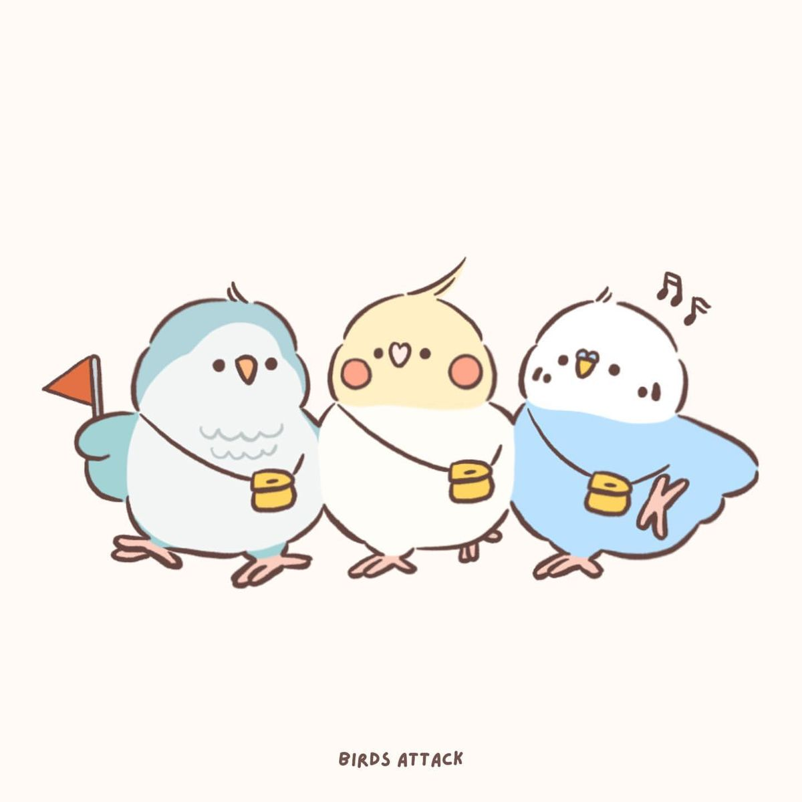
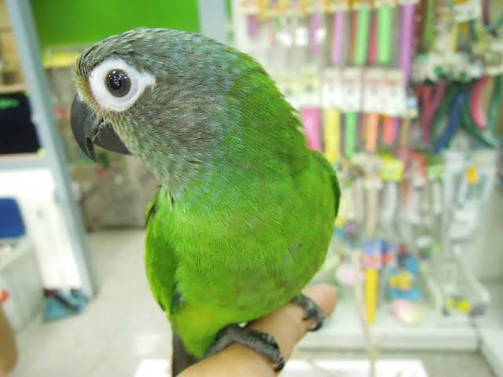
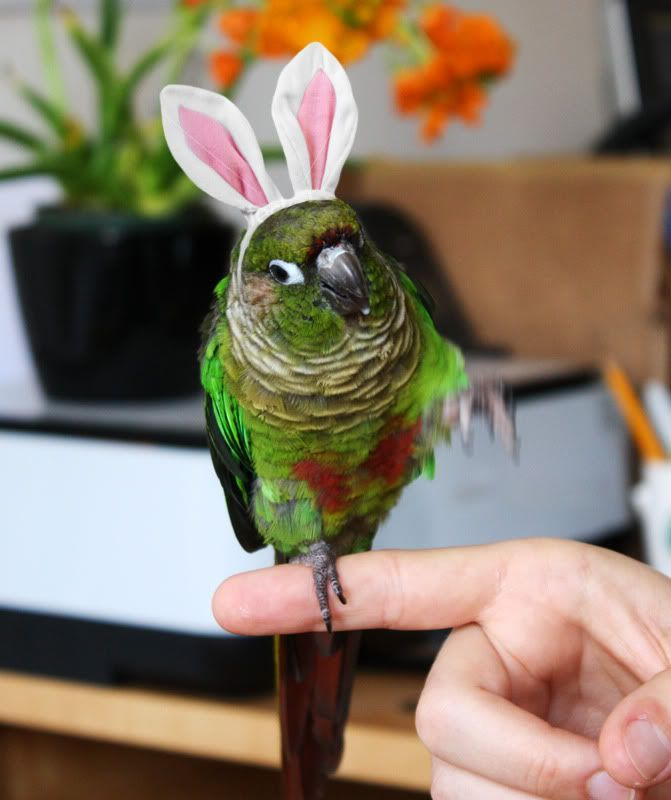
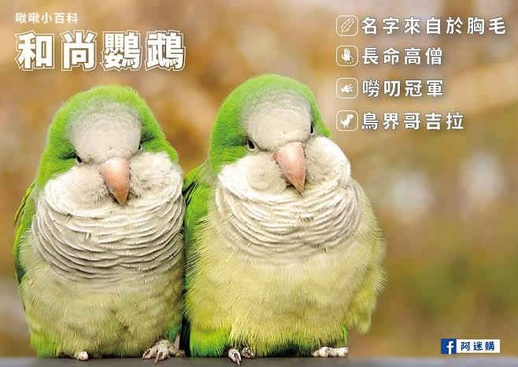
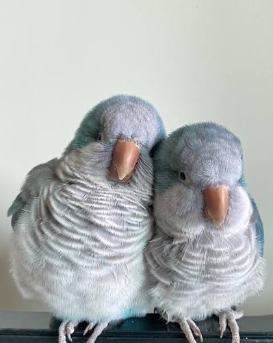
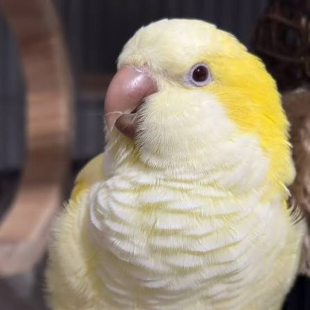
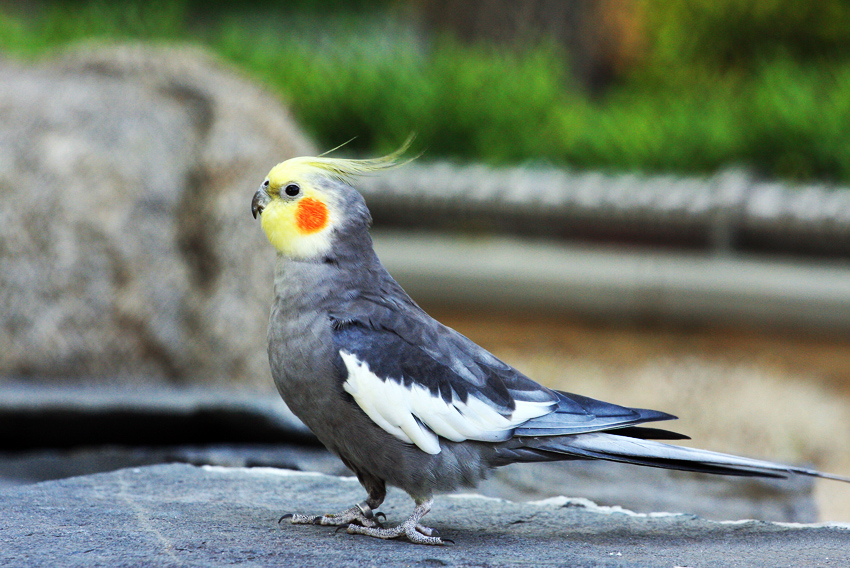
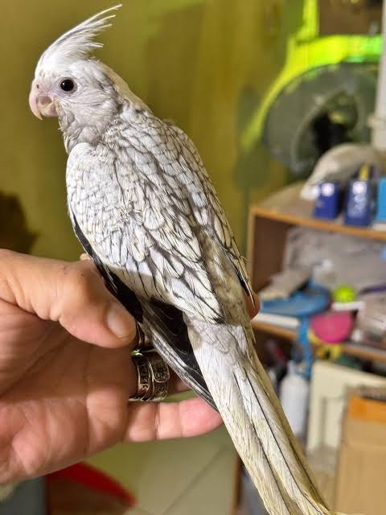
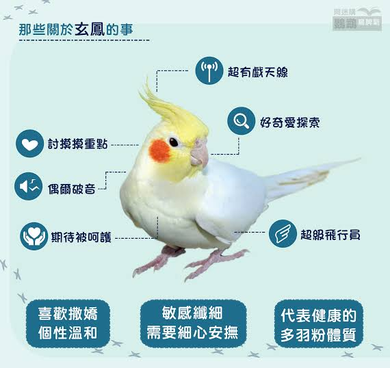
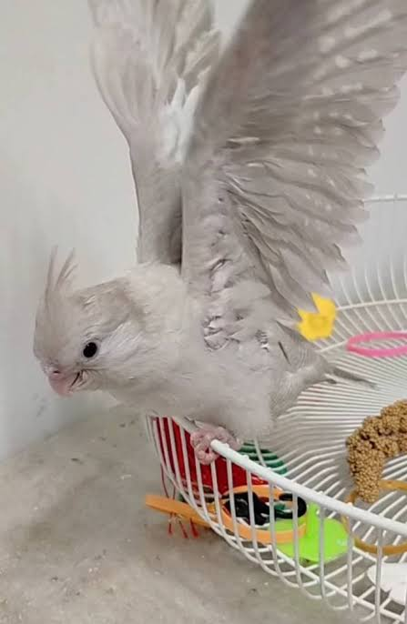

認識三種很受歡迎的伴侶鸚鵡：活潑黏人的小太陽、愛講話的和尚鸚鵡， 還有頂著一撮冠羽的玄鳳鸚鵡。 鸚鵡聰明又長壽，常見的小型鸚鵡能活十幾到二三十年， 需要大量陪伴、均衡飲食和安全的活動空間。 決定飼養前先做好功課，並承諾不棄養、不放生。
原產南美洲的錐尾鸚鵡，體型小、個性親人，是台灣很常見的寵物鳥。

學名 Aratinga weddellii，又叫韋德爾鸚鵡，原產於亞馬遜盆地西部。 體長約 28 公分，身體是綠色，頭部帶灰褐色，眼睛外圍有一圈很明顯的白色眼圈。 牠是同屬中唯一頭部呈灰色的種類。個性溫和、喜歡跟人互動， 而且比太陽鸚鵡等近親安靜，適合住在公寓的家庭，壽命可達 30 年以上。

學名 Pyrrhura molinae，體長約 25 公分，是最小型的錐尾鸚鵡之一。 頭頂深褐、臉頰綠色，胸前有灰色鱗片般的橫紋，腹部和尾羽帶紅色。 牠價格親民、音量比大型鸚鵡小，又活潑愛玩、喜歡鑽進主人衣服裡撒嬌， 是很多新手入門的第一隻鸚鵡，壽命約 30 年。
學名 Myiopsitta monachus，原產阿根廷、烏拉圭等南美洲地區，體長約 30 公分，名字來自胸前像僧袍的灰白羽毛。飼養下壽命約 20～30 年。

最原始的羽色：亮綠色身體、灰白胸口、藍色飛羽。 和尚鸚鵡是少數會用樹枝蓋出大型「公寓巢」的鸚鵡，每對都有自己的房間。 牠們聰明又愛說話，學舌能力在小型鸚鵡中名列前茅。

人工培育出的藍化品種，羽毛缺少黃色色素， 原本的綠色就變成柔和的粉藍色，搭配灰白胸毛看起來更清爽。 外型不同，但聰明、黏人又愛聊天的個性跟綠和尚一樣。

黃化品種，羽毛缺少黑色素，全身呈現奶油般的淡黃色， 胸前的鱗片紋也變成淺黃白色，嘴喙是粉膚色。 顏色比較少見，價格通常也比原始綠色高一些。
學名 Nymphicus hollandicus，又叫雞尾鸚鵡，原產澳洲，體長約 30 公分，長尾巴約佔身長一半。頭上的冠羽是情緒雷達，個性溫和但膽小，壽命約 20 年。

也叫原始灰，是澳洲野外的原本模樣：灰色身體配白色翅膀斑。 公鳥換羽後臉部亮黃、橘紅腮紅清楚；母鳥臉部偏灰。 基因最強勢、最常見，價格也最親民。

結合兩種變異：「白面」讓黃、橘、紅色素消失，所以沒有腮紅、臉是白色； 「珍珠」讓背部和翅膀出現魚鱗般的斑點。 公鳥長大換羽後，珍珠斑可能會漸漸褪去。

羽毛缺少黑色素，全身白到奶油黃，保留黃色臉和橘紅腮紅，眼睛是紅色的， 就是大家印象中「黃臉紅腮」的經典玄鳳。 繁殖容易、需求大，屬於入門款。

英文 Emerald，也叫橄欖（Olive）玄鳳，是隱性遺傳的變異。 灰色羽毛上帶有淡淡的黃綠色調，看起來像蒙上一層霧面， 斑駁又低調，數量較少，屬於比較少見的花色。